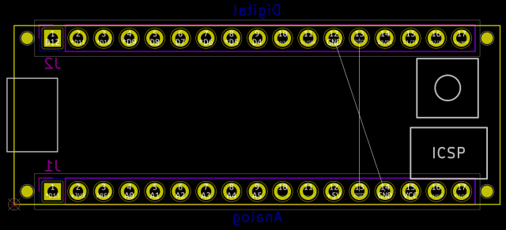

This template forms the basis for a board with the same layout as an Arduino Micro, including the appropriate board outline, header locations, and annotations denoting the location of the USB port, reset button, and ICSP header.
Note: this template is not a shield. Rather, it is intended for those who want to design a board that has the same footprint as an Arduino Micro.

(c) 2021 Caleb Reister